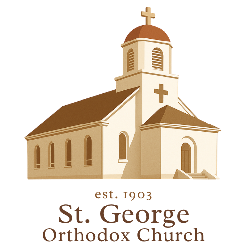

Internal announcements first
PDFs, scattered links, dated updates, and parishioner-only items can make the site feel closed before a visitor ever arrives.

St. George Website Redesign A Digital NarthexStrategic Vision
A beautiful, visitor-first website for St. George Orthodox Christian Church in Kearney, Nebraska.
Ancient Christian worship in Kearney, Nebraska
The Core Shift
PDFs, scattered links, dated updates, and parishioner-only items can make the site feel closed before a visitor ever arrives.
Service times, welcome, visitor guidance, parish story, contact, and Orthodox beauty should be clear within seconds.
What We Found
They assume the visitor may be curious, nervous, non-Orthodox, or brand new to worship.
Service times, location, calendar, livestream, and contact are visible without digging.
Photos, ministries, education, families, feast days, and fellowship show that the Church is alive.
Examples Reviewed
A modern Antiochian feel that proves reverent does not have to mean dated.
A clear visitor path that explains the first visit without overwhelming people.
The regular Divine Service schedule is immediately visible.
Detailed services, events, livestreams, and parishioner utility keep the site current.
Parish story, contact, giving, and livestream tools feel specific and personal.
Services, youth, education, culture, charity, and fellowship are easy to see.
Father Cal's Lens
"Predictably beautiful and beautifully predictable."
The website should make visitors sense what parish life should be: loved, organized, alive, family-friendly, and welcoming.
Redesign Goals
Visitor Pathway
A first-time visitor should not have to decode Orthodox life alone. The site should answer the quiet questions that keep people from walking in.
Parish Identity
Icons, worship, sacraments, Scripture, Tradition, feast days, and the Divine Liturgy should be presented plainly and beautifully.
Antioch connects the parish to the place where believers were first called Christians, and to the living Antiochian Archdiocese.
The site should honor Syrian and Lebanese roots, Fr. Nicola Yanney, local families, and Central Nebraska life today.
Kearney Bridge
The redesign should make Orthodoxy feel both ancient and close to home: the same apostolic faith, lived here among Kearney families, students, farmers, professionals, children, converts, and lifelong Orthodox Christians.
A direct line that says what the parish is, where it is, and why it matters without sounding like advertising.
A simple path for people who are curious, nervous, returning to church, new to town, or searching for depth.
The site should feel rooted in Central Nebraska, not like a generic template with an Orthodox label attached.
Heritage
St. George can honor the immigrant families who carried the Antiochian Orthodox faith into Nebraska and helped build the parish community.
The local story can connect to the wider mission of Orthodoxy in North America: priests, families, worship, sacrifice, and endurance on the plains.
The site should make clear that history is not nostalgia. It is the root system feeding a living parish today.
Who This Serves
Visual Concept
A design language that pairs Nebraska restraint with Orthodox richness: open space, warm hospitality, icon gold, deep red, blue depth, real parish photography, and dignified typography.
“Rooted in the ancient Church. At home in Kearney.”
“A place for prayer, family, and the life of the Church.”
“Come worship with us, ask questions, and stay for coffee hour.”
Visual Direction
The design should feel reverent, warm, and approachable: dignified type, restrained ornament, rich photos, and enough quiet space to breathe.
Mobile-First
Most visitors will find the parish from a phone search. The redesign must be fast, readable, and direct on small screens.
Public vs. Private
Member Portal Concept
Inside the protected member portal, parishioners can submit ideas, organize them by category, upvote shared priorities, and see what the council chooses to act on.
The portal surfaces consensus without forcing every idea through hallway conversations, duplicate emails, or annual-meeting surprises.
How It Works
Exterior, interior, landscaping, church culture, education, hospitality, youth, maintenance, and other council-approved categories.
The prompt asks for constructive proposals, not just complaints: “What problem are you seeing, and what would help?”
Members can support existing ideas, which reduces duplicates and reveals where the parish already agrees.
Top ideas are weighed against budget, feasibility, pastoral vision, urgency, and major commitments already underway.
Accountability Loop
The annual meeting becomes the closing loop: completed priorities are shown clearly, selected goals are explained, and highly supported ideas that were not selected receive honest reasoning.
Privacy Rule
A hidden link is not security. Member contact info, children and youth details, internal notes, private recordings, and member-only governance discussions belong behind real access control with clear approval and opt-out rules.
Phased Path
Agree on visitor-first strategy, core pages, and platform criteria.
Photos, service times, parish history, clergy bio, ministry info, giving links.
Home, Visit, Calendar, Parish Life, About Orthodoxy, Contact.
Publish the public site, then add a protected parishioner hub with the priority board as a later phase.
The Goal
A beautiful invitation to the weary, a clear guide for the curious, a practical tool for the faithful, and a public witness to Orthodox Christianity in Kearney.
"Come and see."